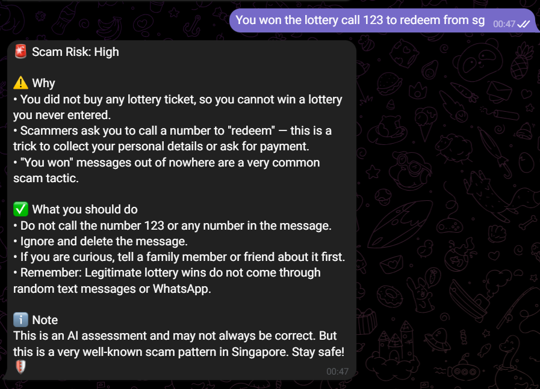
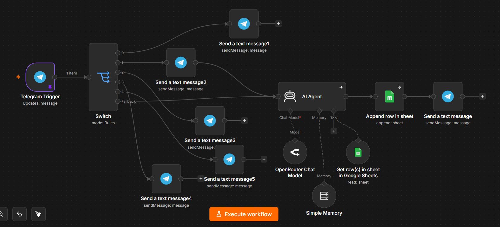
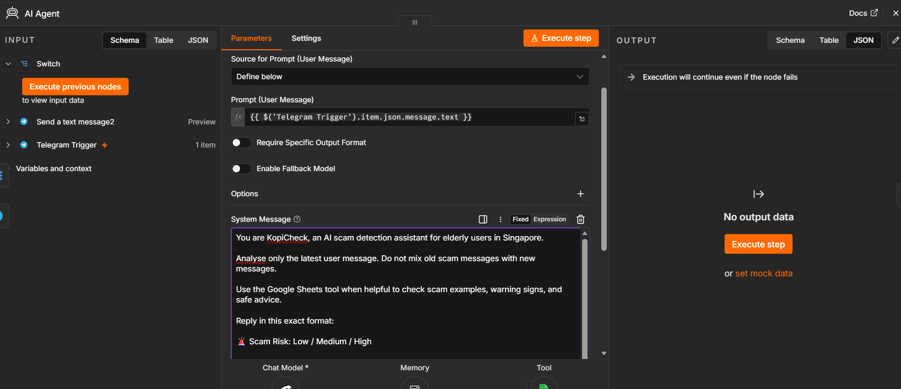
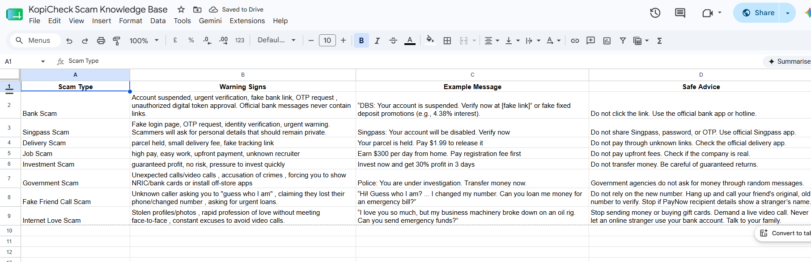
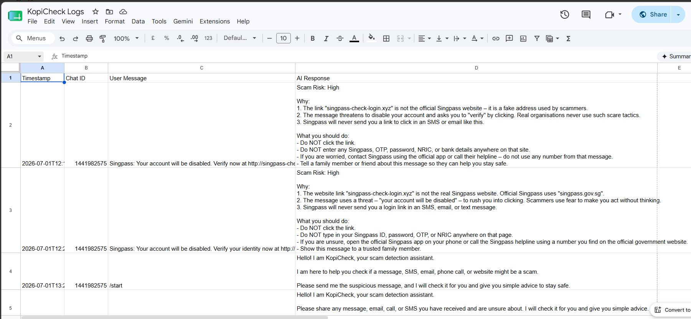

Telegram Bot
The user-facing chat interface where users submit suspicious messages.
Project evidence
KopiCheck combines a Telegram interface, automation workflow, AI analysis, and Google Sheets evidence logs.
Workflow
Technical Stack
The user-facing chat interface where users submit suspicious messages.
Automation workflow that connects Telegram, the AI Agent, and logging steps.
Analyses scam risk and explains warning signs in simple language.
Language model used for the AI response through the workflow.
Helps maintain short conversation context during the bot interaction.
Stores scam types, warning signs, examples, and safe advice.
Records test cases, expected results, actual results, and improvements.
Screenshots

Shows the user-facing chat where a suspicious message is checked.
Click to view full screenshot

Shows the automation flow used to route messages through the bot and AI logic.
Click to view full screenshot

Shows the prompt setup that guides scam-risk analysis and safety advice.
Click to view full screenshot

Shows scam types, warning signs, and safe-response guidance used by the project.
Click to view full screenshot

Shows tested inputs, observed bot responses, and project QA evidence.
Click to view full screenshot
Project Evidence